#import necessary libs
import numpy as np
import pandas as pd
import matplotlib.pyplot as plt
import seaborn as sns
import os
import warnings
warnings.filterwarnings('ignore')
%matplotlib inlineStudent Performance based in Portugal
Information about the dataset
- thw dataset is about the performance of students in two subjects: Math and Portuguese
- the dataset attributes include student grades, demographic, social and school related features
- the target attribute is G3, the final grade of the student
Additional information
1 school - student’s school (binary: ‘GP’ - Gabriel Pereira or ‘MS’ - Mousinho da Silveira)
2 sex - student’s sex (binary: ‘F’ - female or ‘M’ - male)
3 age - student’s age (numeric: from 15 to 22)
4 address - student’s home address type (binary: ‘U’ - urban or ‘R’ - rural)
5 famsize - family size (binary: ‘LE3’ - less or equal to 3 or ‘GT3’ - greater than 3)
6 Pstatus - parent’s cohabitation status (binary: ‘T’ - living together or ‘A’ - apart)
7 Medu - mother’s education (numeric: 0 - none, 1 - primary education (4th grade), 2 – 5th to 9th grade, 3 – secondary education or 4 – higher education)
8 Fedu - father’s education (numeric: 0 - none, 1 - primary education (4th grade), 2 – 5th to 9th grade, 3 – secondary education or 4 – higher education)
9 Mjob - mother’s job (nominal: ‘teacher’, ‘health’ care related, civil ‘services’ (e.g. administrative or police), ‘at_home’ or ‘other’)
10 Fjob - father’s job (nominal: ‘teacher’, ‘health’ care related, civil ‘services’ (e.g. administrative or police), ‘at_home’ or ‘other’)
11 reason - reason to choose this school (nominal: close to ‘home’, school ‘reputation’, ‘course’ preference or ‘other’)
12 guardian - student’s guardian (nominal: ‘mother’, ‘father’ or ‘other’)
13 traveltime - home to school travel time (numeric: 1 - <15 min., 2 - 15 to 30 min., 3 - 30 min. to 1 hour, or 4 - >1 hour)
14 studytime - weekly study time (numeric: 1 - <2 hours, 2 - 2 to 5 hours, 3 - 5 to 10 hours, or 4 - >10 hours)
15 failures - number of past class failures (numeric: n if 1<=n<3, else 4)
16 schoolsup - extra educational support (binary: yes or no)
17 famsup - family educational support (binary: yes or no)
18 paid - extra paid classes within the course subject (Math or Portuguese) (binary: yes or no)
19 activities - extra-curricular activities (binary: yes or no)
20 nursery - attended nursery school (binary: yes or no)
21 higher - wants to take higher education (binary: yes or no)
22 internet - Internet access at home (binary: yes or no)
23 romantic - with a romantic relationship (binary: yes or no)
24 famrel - quality of family relationships (numeric: from 1 - very bad to 5 - excellent)
25 freetime - free time after school (numeric: from 1 - very low to 5 - very high)
26 goout - going out with friends (numeric: from 1 - very low to 5 - very high)
27 Dalc - workday alcohol consumption (numeric: from 1 - very low to 5 - very high)
28 Walc - weekend alcohol consumption (numeric: from 1 - very low to 5 - very high)
29 health - current health status (numeric: from 1 - very bad to 5 - very good)
30 absences - number of school absences (numeric: from 0 to 93)
these grades are related with the course subject, Math or Portuguese:
31 G1 - first period grade (numeric: from 0 to 20) 31 G2 - second period grade (numeric: from 0 to 20) 32 G3 - final grade (numeric: from 0 to 20, output target)
Source
https://archive.ics.uci.edu/ml/datasets/Student+Performance
# Read the datasets
math_data = pd.read_csv('student-mat.csv', sep=';')
por_data = pd.read_csv('student-por.csv')print("Columns in math_data", math_data.columns)
print("Columns in por_data", por_data.columns)Columns in math_data Index(['school', 'sex', 'age', 'address', 'famsize', 'Pstatus', 'Medu', 'Fedu',
'Mjob', 'Fjob', 'reason', 'guardian', 'traveltime', 'studytime',
'failures', 'schoolsup', 'famsup', 'paid', 'activities', 'nursery',
'higher', 'internet', 'romantic', 'famrel', 'freetime', 'goout', 'Dalc',
'Walc', 'health', 'absences', 'G1', 'G2', 'G3'],
dtype='object')
Columns in por_data Index(['school', 'sex', 'age', 'address', 'famsize', 'Pstatus', 'Medu', 'Fedu',
'Mjob', 'Fjob', 'reason', 'guardian', 'traveltime', 'studytime',
'failures', 'schoolsup', 'famsup', 'paid', 'activities', 'nursery',
'higher', 'internet', 'romantic', 'famrel', 'freetime', 'goout', 'Dalc',
'Walc', 'health', 'absences', 'G1', 'G2', 'G3'],
dtype='object')por_data.head()| school | sex | age | address | famsize | Pstatus | Medu | Fedu | Mjob | Fjob | ... | famrel | freetime | goout | Dalc | Walc | health | absences | G1 | G2 | G3 | |
|---|---|---|---|---|---|---|---|---|---|---|---|---|---|---|---|---|---|---|---|---|---|
| 0 | GP | F | 18 | U | GT3 | A | 4 | 4 | at_home | teacher | ... | 4 | 3 | 4 | 1 | 1 | 3 | 4 | 0 | 11 | 11 |
| 1 | GP | F | 17 | U | GT3 | T | 1 | 1 | at_home | other | ... | 5 | 3 | 3 | 1 | 1 | 3 | 2 | 9 | 11 | 11 |
| 2 | GP | F | 15 | U | LE3 | T | 1 | 1 | at_home | other | ... | 4 | 3 | 2 | 2 | 3 | 3 | 6 | 12 | 13 | 12 |
| 3 | GP | F | 15 | U | GT3 | T | 4 | 2 | health | services | ... | 3 | 2 | 2 | 1 | 1 | 5 | 0 | 14 | 14 | 14 |
| 4 | GP | F | 16 | U | GT3 | T | 3 | 3 | other | other | ... | 4 | 3 | 2 | 1 | 2 | 5 | 0 | 11 | 13 | 13 |
5 rows × 33 columns
math_data.head()| school | sex | age | address | famsize | Pstatus | Medu | Fedu | Mjob | Fjob | ... | famrel | freetime | goout | Dalc | Walc | health | absences | G1 | G2 | G3 | |
|---|---|---|---|---|---|---|---|---|---|---|---|---|---|---|---|---|---|---|---|---|---|
| 0 | GP | F | 18 | U | GT3 | A | 4 | 4 | at_home | teacher | ... | 4 | 3 | 4 | 1 | 1 | 3 | 6 | 5 | 6 | 6 |
| 1 | GP | F | 17 | U | GT3 | T | 1 | 1 | at_home | other | ... | 5 | 3 | 3 | 1 | 1 | 3 | 4 | 5 | 5 | 6 |
| 2 | GP | F | 15 | U | LE3 | T | 1 | 1 | at_home | other | ... | 4 | 3 | 2 | 2 | 3 | 3 | 10 | 7 | 8 | 10 |
| 3 | GP | F | 15 | U | GT3 | T | 4 | 2 | health | services | ... | 3 | 2 | 2 | 1 | 1 | 5 | 2 | 15 | 14 | 15 |
| 4 | GP | F | 16 | U | GT3 | T | 3 | 3 | other | other | ... | 4 | 3 | 2 | 1 | 2 | 5 | 4 | 6 | 10 | 10 |
5 rows × 33 columns
#specify the common columns to merge on
merge_cols = ['school','sex','age','address','famsize','Pstatus','Medu','Fedu','Mjob','Fjob','reason','nursery','internet']
#merge the datasets
data = pd.merge(math_data, por_data, on=merge_cols)
print("Shape of the data:", data.shape)Shape of the data: (382, 53)data.head()| school | sex | age | address | famsize | Pstatus | Medu | Fedu | Mjob | Fjob | ... | famrel_y | freetime_y | goout_y | Dalc_y | Walc_y | health_y | absences_y | G1_y | G2_y | G3_y | |
|---|---|---|---|---|---|---|---|---|---|---|---|---|---|---|---|---|---|---|---|---|---|
| 0 | GP | F | 18 | U | GT3 | A | 4 | 4 | at_home | teacher | ... | 4 | 3 | 4 | 1 | 1 | 3 | 4 | 0 | 11 | 11 |
| 1 | GP | F | 17 | U | GT3 | T | 1 | 1 | at_home | other | ... | 5 | 3 | 3 | 1 | 1 | 3 | 2 | 9 | 11 | 11 |
| 2 | GP | F | 15 | U | LE3 | T | 1 | 1 | at_home | other | ... | 4 | 3 | 2 | 2 | 3 | 3 | 6 | 12 | 13 | 12 |
| 3 | GP | F | 15 | U | GT3 | T | 4 | 2 | health | services | ... | 3 | 2 | 2 | 1 | 1 | 5 | 0 | 14 | 14 | 14 |
| 4 | GP | F | 16 | U | GT3 | T | 3 | 3 | other | other | ... | 4 | 3 | 2 | 1 | 2 | 5 | 0 | 11 | 13 | 13 |
5 rows × 53 columns
data.columnsIndex(['school', 'sex', 'age', 'address', 'famsize', 'Pstatus', 'Medu', 'Fedu',
'Mjob', 'Fjob', 'reason', 'guardian_x', 'traveltime_x', 'studytime_x',
'failures_x', 'schoolsup_x', 'famsup_x', 'paid_x', 'activities_x',
'nursery', 'higher_x', 'internet', 'romantic_x', 'famrel_x',
'freetime_x', 'goout_x', 'Dalc_x', 'Walc_x', 'health_x', 'absences_x',
'G1_x', 'G2_x', 'G3_x', 'guardian_y', 'traveltime_y', 'studytime_y',
'failures_y', 'schoolsup_y', 'famsup_y', 'paid_y', 'activities_y',
'higher_y', 'romantic_y', 'famrel_y', 'freetime_y', 'goout_y', 'Dalc_y',
'Walc_y', 'health_y', 'absences_y', 'G1_y', 'G2_y', 'G3_y'],
dtype='object')Data Preprocessing
#check for missing values
data.isnull().sum()school 0
sex 0
age 0
address 0
famsize 0
Pstatus 0
Medu 0
Fedu 0
Mjob 0
Fjob 0
reason 0
guardian_x 0
traveltime_x 0
studytime_x 0
failures_x 0
schoolsup_x 0
famsup_x 0
paid_x 0
activities_x 0
nursery 0
higher_x 0
internet 0
romantic_x 0
famrel_x 0
freetime_x 0
goout_x 0
Dalc_x 0
Walc_x 0
health_x 0
absences_x 0
G1_x 0
G2_x 0
G3_x 0
guardian_y 0
traveltime_y 0
studytime_y 0
failures_y 0
schoolsup_y 0
famsup_y 0
paid_y 0
activities_y 0
higher_y 0
romantic_y 0
famrel_y 0
freetime_y 0
goout_y 0
Dalc_y 0
Walc_y 0
health_y 0
absences_y 0
G1_y 0
G2_y 0
G3_y 0
dtype: int64#check for duplicate rows
data.duplicated().sum()0#check for the datatypes
data.dtypesschool object
sex object
age int64
address object
famsize object
Pstatus object
Medu int64
Fedu int64
Mjob object
Fjob object
reason object
guardian_x object
traveltime_x int64
studytime_x int64
failures_x int64
schoolsup_x object
famsup_x object
paid_x object
activities_x object
nursery object
higher_x object
internet object
romantic_x object
famrel_x int64
freetime_x int64
goout_x int64
Dalc_x int64
Walc_x int64
health_x int64
absences_x int64
G1_x int64
G2_x int64
G3_x int64
guardian_y object
traveltime_y int64
studytime_y int64
failures_y int64
schoolsup_y object
famsup_y object
paid_y object
activities_y object
higher_y object
romantic_y object
famrel_y int64
freetime_y int64
goout_y int64
Dalc_y int64
Walc_y int64
health_y int64
absences_y int64
G1_y int64
G2_y int64
G3_y int64
dtype: object#check for the unique values in each column
for col in data.columns:
print(col, data[col].unique())
school ['GP' 'MS']
sex ['F' 'M']
age [18 17 15 16 19 22 20]
address ['U' 'R']
famsize ['GT3' 'LE3']
Pstatus ['A' 'T']
Medu [4 1 3 2 0]
Fedu [4 1 2 3 0]
Mjob ['at_home' 'health' 'other' 'services' 'teacher']
Fjob ['teacher' 'other' 'services' 'health' 'at_home']
reason ['course' 'other' 'home' 'reputation']
guardian_x ['mother' 'father' 'other']
traveltime_x [2 1 3 4]
studytime_x [2 3 1 4]
failures_x [0 3 2 1]
schoolsup_x ['yes' 'no']
famsup_x ['no' 'yes']
paid_x ['no' 'yes']
activities_x ['no' 'yes']
nursery ['yes' 'no']
higher_x ['yes' 'no']
internet ['no' 'yes']
romantic_x ['no' 'yes']
famrel_x [4 5 3 1 2]
freetime_x [3 2 4 1 5]
goout_x [4 3 2 1 5]
Dalc_x [1 2 5 3 4]
Walc_x [1 3 2 4 5]
health_x [3 5 1 2 4]
absences_x [ 6 4 10 2 0 16 14 7 8 25 12 54 18 26 20 56 24 28 5 13 15 22 3 21
1 75 30 19 9 11 23 17]
G1_x [ 5 7 15 6 12 16 14 10 13 8 11 9 17 19 18 4 3]
G2_x [ 6 5 8 14 10 15 12 18 16 13 9 11 7 19 0 17]
G3_x [ 6 10 15 11 19 9 12 14 16 5 8 17 18 13 20 7 0 4]
guardian_y ['mother' 'father' 'other']
traveltime_y [2 1 3 4]
studytime_y [2 3 1 4]
failures_y [0 3 1 2]
schoolsup_y ['yes' 'no']
famsup_y ['no' 'yes']
paid_y ['no' 'yes']
activities_y ['no' 'yes']
higher_y ['yes' 'no']
romantic_y ['no' 'yes']
famrel_y [4 5 3 1 2]
freetime_y [3 2 4 1 5]
goout_y [4 3 2 1 5]
Dalc_y [1 2 5 3 4]
Walc_y [1 3 2 4 5]
health_y [3 5 1 2 4]
absences_y [ 4 2 6 0 10 8 16 14 1 22 12 32 30 21 15 9 7 18 3]
G1_y [ 0 9 12 14 11 13 10 15 17 8 16 18 7 19 5]
G2_y [11 13 14 12 16 17 8 10 15 9 7 18 19 5]
G3_y [11 12 14 13 17 15 7 10 16 9 6 8 18 0 1 5 19]Exploratory Data Analysis
- The dataset has 33 attributes and 1044 instances
- The dataset has no missing values
- The dataset has 3 target attributes: G1, G2 and G3
- explore number of absence
- explore number of failures
- explore number of students who want to take higher education
- explore number of students who have internet access at home
- explore number of students who have romantic relationship
- explore number of students who have extra educational support
- explore number of students who have family educational support
- explore number of students who have extra paid classes within the course subject
- explore number of students who have extra-curricular activities
- explore number of students who attended nursery school
- explore number of students who have quality of family relationships
- explore number of students who have free time after school
- explore number of students who go out with friends
- explore number of students who have workday alcohol consumption
- explore number of students who have weekend alcohol consumption
- explore number of students who have current health status
- explore number of students who have school absences
- explore number of students who have first period grade
- explore number of students who have second period grade
- explore number of students who have final grade
- explore number of students who have first period grade, second period grade and final grade
import seaborn as sns
sns.set(style="whitegrid")
ax = sns.boxplot(x=data['G3_x'])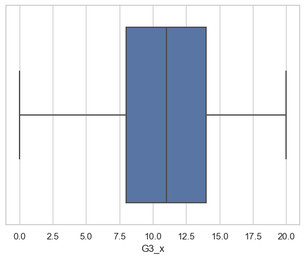
#check for the outliers
for col in data.columns:
if data[col].dtype != 'object':
sns.boxplot(x=data[col])
plt.show()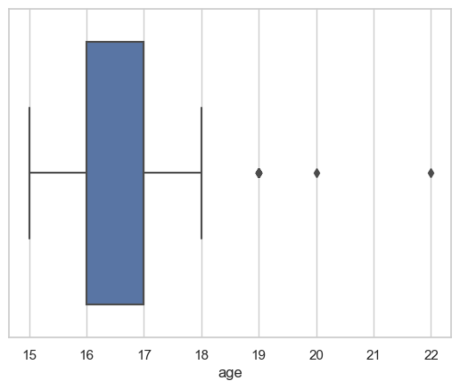
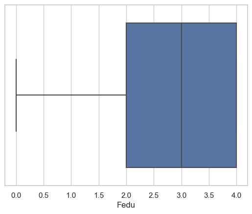

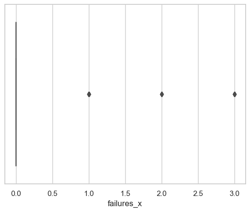
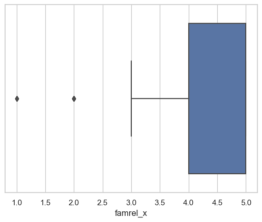

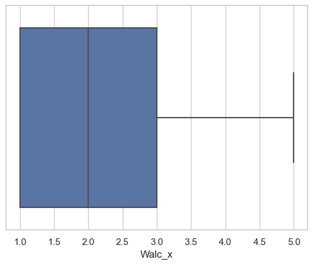
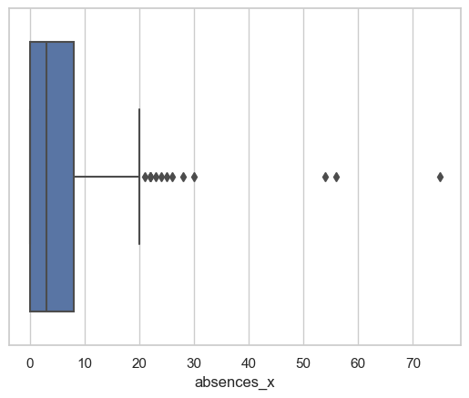
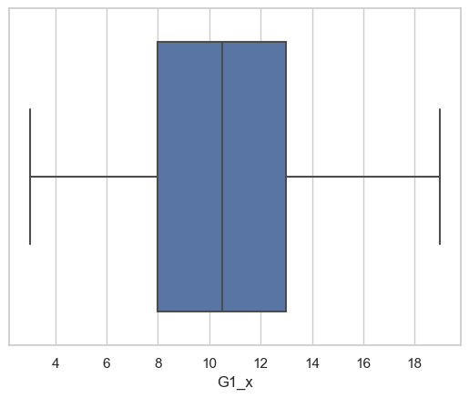
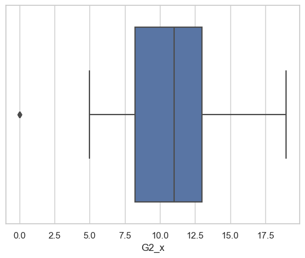

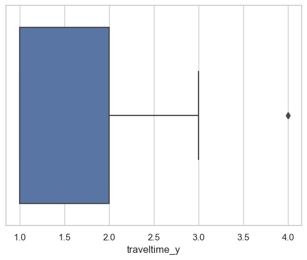
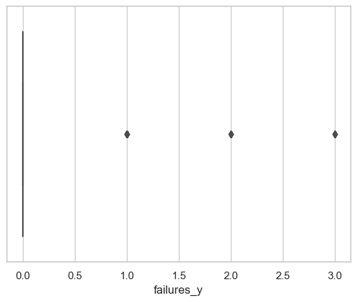
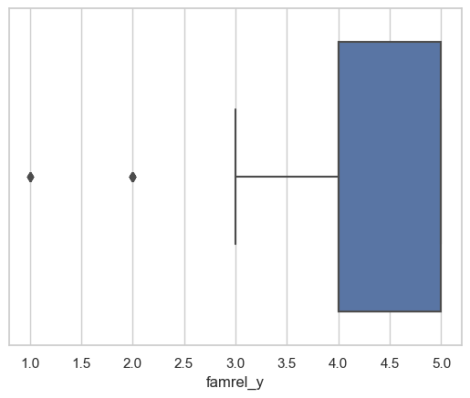
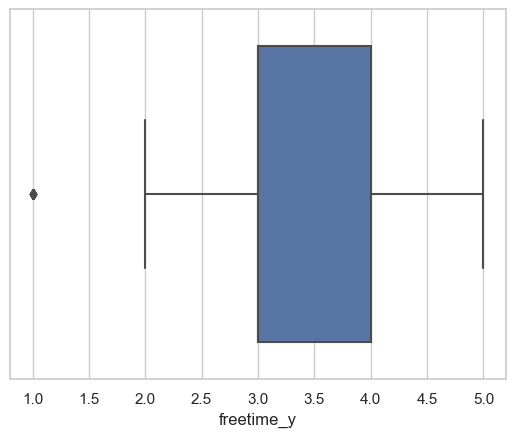
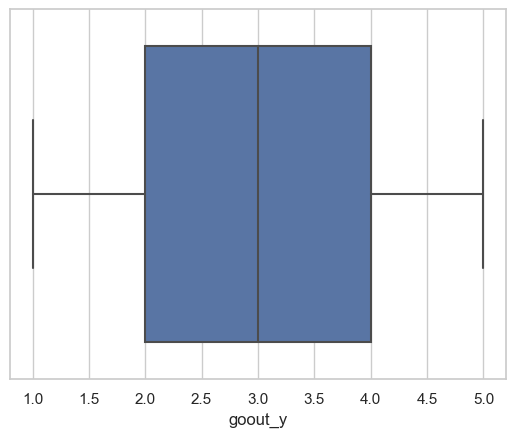
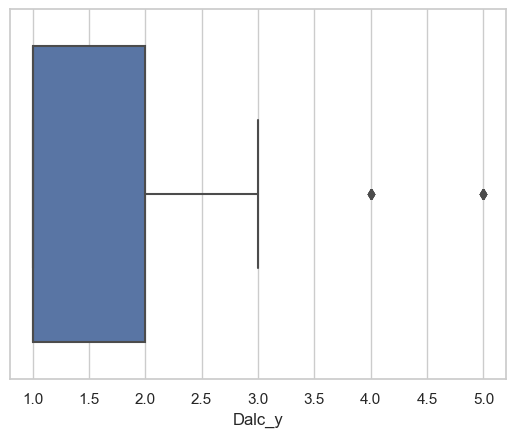
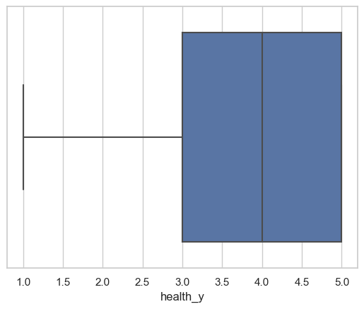
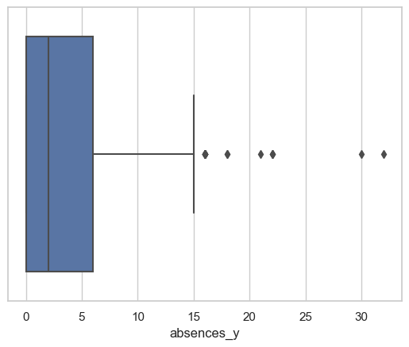
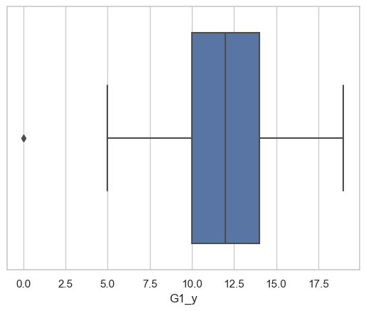
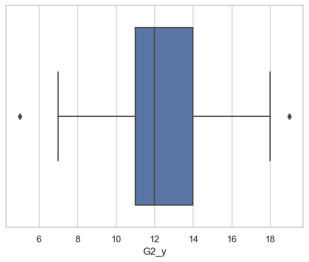
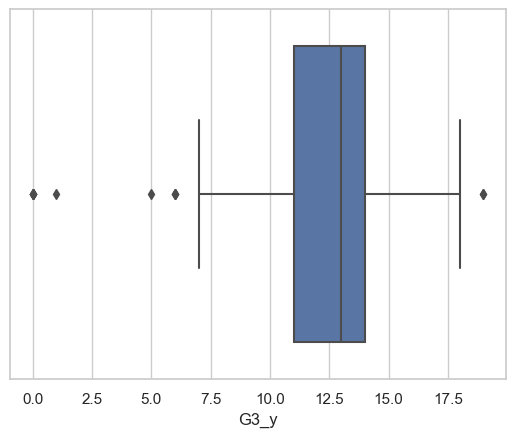
# explore the categorical variables
for col in data.columns:
if data[col].dtype == 'object':
sns.countplot(x=data[col])
plt.show()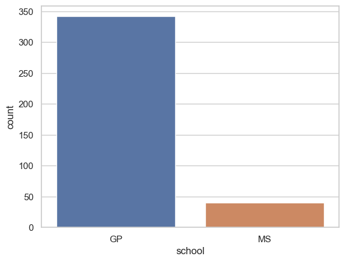
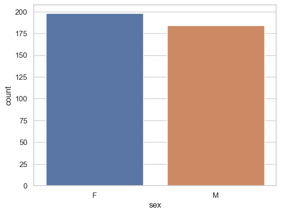
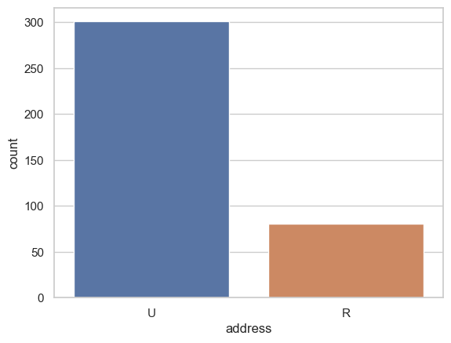
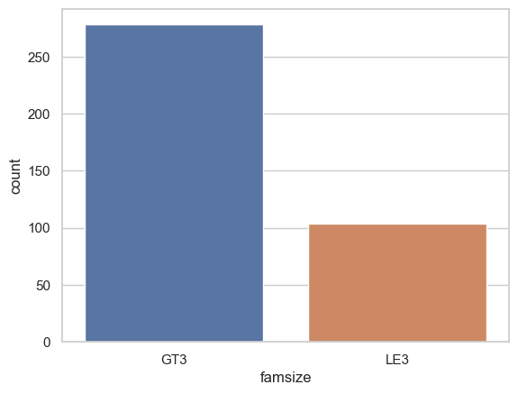
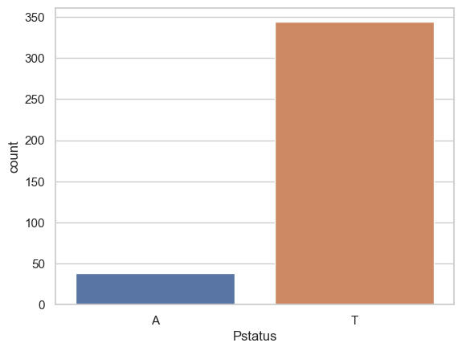
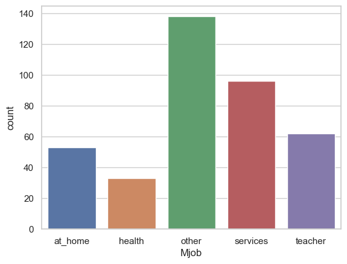
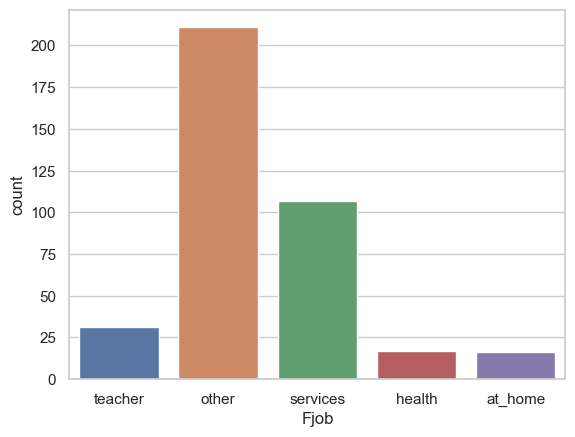
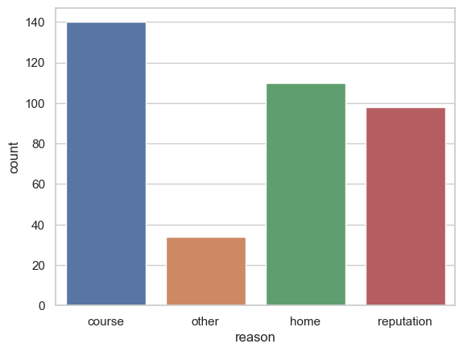

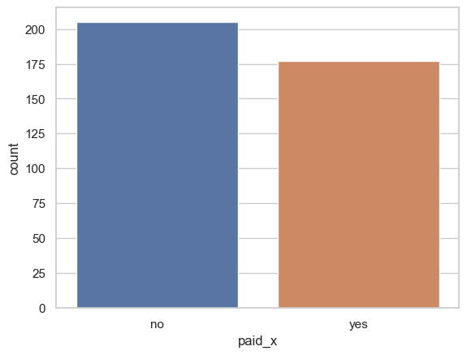
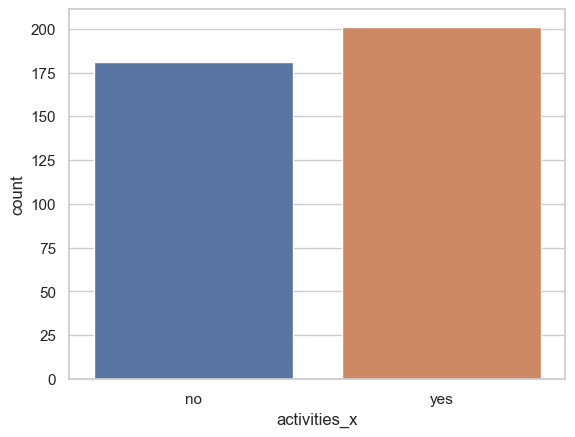
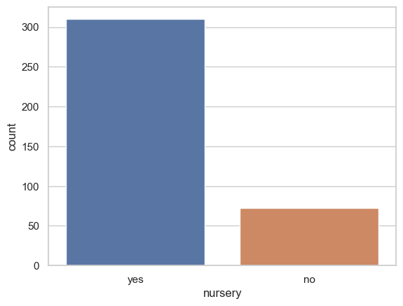
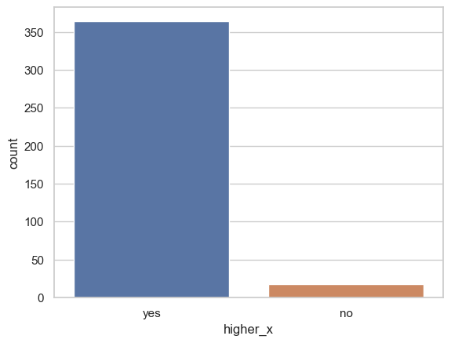
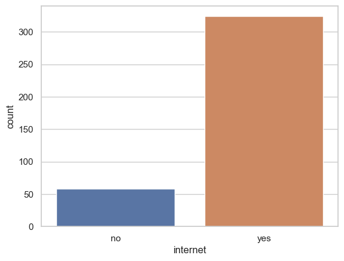


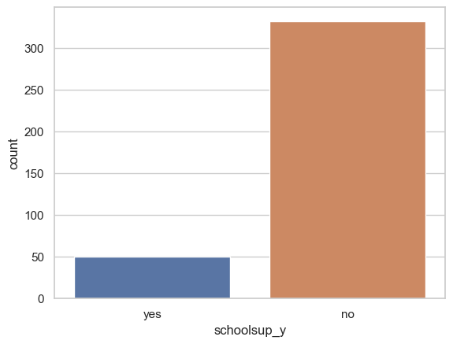
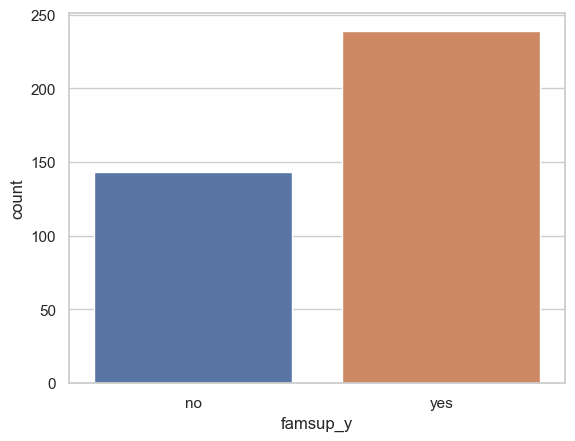
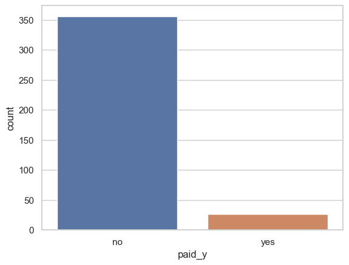

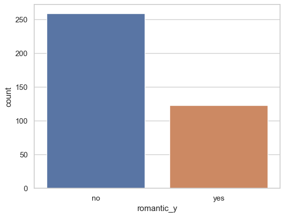
# explore the categorical variables and return the count of each category only
for col in data.columns:
if data[col].dtype == 'object':
print(data[col].value_counts())
print("=====================================================")
school
GP 342
MS 40
Name: count, dtype: int64
=====================================================
sex
F 198
M 184
Name: count, dtype: int64
=====================================================
address
U 301
R 81
Name: count, dtype: int64
=====================================================
famsize
GT3 278
LE3 104
Name: count, dtype: int64
=====================================================
Pstatus
T 344
A 38
Name: count, dtype: int64
=====================================================
Mjob
other 138
services 96
teacher 62
at_home 53
health 33
Name: count, dtype: int64
=====================================================
Fjob
other 211
services 107
teacher 31
health 17
at_home 16
Name: count, dtype: int64
=====================================================
reason
course 140
home 110
reputation 98
other 34
Name: count, dtype: int64
=====================================================
guardian_x
mother 275
father 91
other 16
Name: count, dtype: int64
=====================================================
schoolsup_x
no 331
yes 51
Name: count, dtype: int64
=====================================================
famsup_x
yes 238
no 144
Name: count, dtype: int64
=====================================================
paid_x
no 205
yes 177
Name: count, dtype: int64
=====================================================
activities_x
yes 201
no 181
Name: count, dtype: int64
=====================================================
nursery
yes 310
no 72
Name: count, dtype: int64
=====================================================
higher_x
yes 364
no 18
Name: count, dtype: int64
=====================================================
internet
yes 324
no 58
Name: count, dtype: int64
=====================================================
romantic_x
no 261
yes 121
Name: count, dtype: int64
=====================================================
guardian_y
mother 275
father 91
other 16
Name: count, dtype: int64
=====================================================
schoolsup_y
no 332
yes 50
Name: count, dtype: int64
=====================================================
famsup_y
yes 239
no 143
Name: count, dtype: int64
=====================================================
paid_y
no 356
yes 26
Name: count, dtype: int64
=====================================================
activities_y
yes 200
no 182
Name: count, dtype: int64
=====================================================
higher_y
yes 364
no 18
Name: count, dtype: int64
=====================================================
romantic_y
no 259
yes 123
Name: count, dtype: int64
=====================================================#